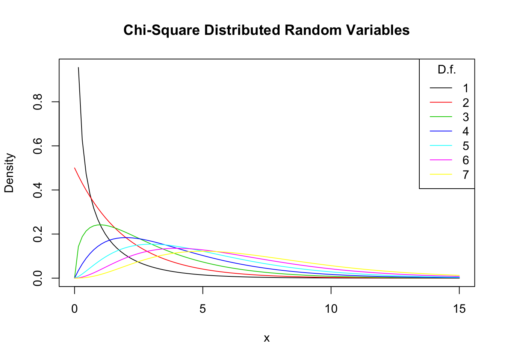

2 Probability Theory
This chapter reviews some basic concepts of probability theory and demonstrates how they can be applied in R.
Most of the statistical functionalities in R’s standard version are collected in the stats package. It provides simple functions which compute descriptive measures and faciliate calculus involving a variety of probability distributions but also holds more sophisticated routines that e.g. enable the user to estimate a large number of models based on the same data or help to conduct extensive simulation studies. Execute library(help = "stats") in the console to view the documentation and a complete list of all functions gathered in stats.
In what follows, we lay our focus on (some of) the probability distributions that are handled by R and show how to use the relevant functions to solve simple problems. Thereby we will repeat some core concepts of probability theory. Among other things, You will learn how to draw random numbers, how to compute densities, probabilities, quantiles and alike. As we shall see, it is very convenient to rely on these routines, especially when writing Your own functions.
Random Variables and Probability Distributions
For a start, let us briefly review some basic concepts in probability.
- The mutually exclusive results of a random process are called the outcomes. ‘Mutually exclusive’ means that only one of the possible outcomes is observed.
- We refer to the probability of an outcome as the proportion of the time that the outcome occurs in the long run, that is if the experiment is repeated very often.
- The set of all possible outcomes of a random variable is called the sample space.
- An event is a subset of the sample space and consists of one or more outcomes.
These indeas are unified in the concept of a random variable which is a numerical summary of random outcomes. Random variables can be discrete or continuous.
- Discrete random variables have discrete outcomes, e.g. \(0\) and \(1\).
- A continuous random variable takes on a continuum of possible values.
Probability Distributions of Discrete Random Variables
A typical example for a discrete random variable \(D\) is the result of a die roll: in terms of a random experiment this is nothing but randomly selecting a sample of size \(1\) from a set of numbers which are mutually exclusive outcomes. Here, the sample space is \(\{1,2,3,4,5,6\}\) and we can think of many different events, e.g. ‘the observed outcome lies between \(2\) and \(5\)’.
A basic function to draw random samples from a specified set of elements is the the function sample(), see ?sample. We can use it to simulate the random outcome of a die roll. Let’s role the dice!
sample(1:6, 1) ## [1] 4The probability distribution of a discrete random variable is the list of all possible values of the variable and thier probabilities which sum to \(1\). The cumulative probability distribution function states the probability that the random variable is less than or equal to a particular value.
For the die roll, this is straightforward to set up
| Outcome | 1 | 2 | 3 | 4 | 5 | 6 |
|---|---|---|---|---|---|---|
| Probability distribution | 1/6 | 1/6 | 1/6 | 1/6 | 1/6 | 1/6 |
| Cumulative probability distribution | 1/6 | 2/6 | 3/6 | 4/6 | 5/6 | 1 |
We can easily plot both functions using R. Since the probability equals \(1/6\) for each outcome, we set up the vector probability by using the rep() function which replicates a given value a specified number of times.
# generate the vector of probabilities
probability <- rep(1/6,6)
# plot the probabilites
plot(probability, xlab = "outcomes",
main = "Probability Distribution"
) 
For the cumulative probability distribution we need the cumulative probabilities i.e. we need the cumulative sums of the vector probability. These sums can be computed using cumsum().
#generate the vector of cumulative probabilities
cum_probability <- cumsum(probability)
# plot the probabilites
plot(cum_probability,
xlab = "outcomes",
main = "Cumulative Probability Distribution"
) 
Bernoulli Trials
The set of elements sample() draws from does not have to consist of numbers only. We might as well simulate coin tossing with outcomes \(H\) (head) and \(T\) (tail).
sample(c("H","T"),1) ## [1] "T"The result of a coin toss is a Bernoulli distributed random variable i.e. a variable with to possible distinct outcomes.
Imagine you are about to toss a coin \(10\) times in a row and wonder how likely it is to end up with a sequence of outcomes like
\[ H \, H \, T \, T \,T \,H \,T \,T \, H \, H .\]
This is a typical example of a Bernoulli experiment as it consists of \(n=10\) Bernoulli trials that are independent of each other and we are interested in the likelihood of observing \(k=5\) successes \(H\) that occur with probability \(p=0.5\) (assuming a fair coin) in each trial.
It is a well known result that the number of successes \(k\) follows a binomial distribution
\[ k \sim B(n,p). \]
The probability of observing \(k\) successes in the experiment \(B(n,p)\) is hence given by
\[f(k)=P(k)=\begin{pmatrix}n\\ k \end{pmatrix} \cdot p^k \cdot q^{n-k}=\frac{n!}{k!(n-k)!} \cdot p^k \cdot q^{n-k}\]
where \(\begin{pmatrix}n\\ k \end{pmatrix}\) is a binomial coefficient.
In R, we can solve the problem stated above by means of the function dbinom() which calculates the probability of the binomial distribution for parameters x, size, and prob, see ?binom.
dbinom(x = 5,
size = 10,
prob = 0.5
) ## [1] 0.2460938We conclude that the probability of observing Head \(k=5\) times when tossing the coin \(n=10\) times is about \(24.6\%\).
Now assume we are interested in \(P(4 \leq k \leq 7)\) i.e. the probability of observing \(4\), \(5\), \(6\) or \(7\) successes for \(B(10,0.5)\). This is easily computed by providing a vector as the x argument in our call of dbinom() and summing up using sum().
sum(
dbinom(x = 4:7,
size = 10,
prob = 0.5
)
)## [1] 0.7734375The Probability distribution of a discrete random variable is nothing but a list of all possible outcomes that can occur and their respective probabilities. In our coin tossing example, we face \(11\) possible outcomes for \(k\)
# set up vector of possible outcomes
k <- 0:10To visualize the probability distribution function of \(k\) we may therefore simply call
# assign probabilities
probability <- dbinom(x = k,
size = 10,
prob = 0.5
)
# plot outcomes against probabilities
plot(x = k,
y = probability,
main = "Probability Distribution Function") 
In a similar fashion we may plot the cumulative distribution function of \(k\) by executing the following code chunk:
prob <- cumsum(
dbinom(x =0:10,
size = 10,
prob = 0.5
)
)
k <- 0:10
plot(x = k,
y = prob,
main = "Cumulative Distribution Function") 
Expected Values, Mean and Variance
The expected value of a random variable is the long-run average value of the random variable over many repeated trials. For a discrete random variable, the expected value is computed as a weighted average of its possible outcomes whereby the weights are the related probabilities. This is formalized in Key Concept 2.1.
Key Concept 2.1
Expected Value and the Mean
Suppose the random variable \(Y\) takes on \(k\) possible values, \(y_1, \dots, y_k\), where \(y_1\) denotes the first value, \(y_2\) denotes the second value, and so forth, and that the probability that \(Y\) takes on \(y_1\) is \(p_1\), the probability that \(Y\) takes on \(y_2\) is \(p_2\) and so forth. The expected value of \(Y\), \(E(Y)\) is defined as
\[ E(Y) = y_1 p_1 + y_2 p_2 + \cdots + y_k p_k = \sum_{i=1}^k y_i p_i \]
where the notation \(\sum_{i=1}^k y_i p_i\) means “the sum of \(y_i\) \(p_i\) for \(i\) running from \(1\) to \(k\)”. The expected value of \(Y\) is also called the mean of \(Y\) or the expectation of \(Y\) and is denoted by \(\mu_y\).In the dice example, the random variable, \(D\) say, takes on \(6\) possible values \(d_1 = 1, d_2 = 2, \dots, d_6 = 6\). Assuming a fair dice, each of the \(6\) outcomes occurs with a probability of \(1/6\). It is therefore easy to calculate the exact value of \(E(D)\) by hand:
\[ E(D) = 1/6 \sum_{i=1}^6 d_i = 3.5 \]
Here, this is simply the average of the natural numbers from \(1\) to \(6\) since all wights \(p_i\) are \(1/6\). Convince Yourself that this can be easily calculated using the function mean() which computes the arithmetic mean of a numeric vector.
mean(1:6)## [1] 3.5An example of sampling with replacement is rolling a dice three times in a row.
# set random seed for reproducibility
set.seed(1)
# rolling a dice three times in a row
sample(1:6, 3, replace = T)## [1] 2 3 4Of course we could also consider a much bigger number of trials, \(10000\) say. Doing so, it would be pointless to simply print the results to the console: by default R displays up to \(1000\) entries of large vectors and omitts the remainder (give it a go). Eyeballing the numbers does not reveal too much. Instead let us calculate the sample average of the outcomes using mean() and see if the result comes close to the expected value \(E(D)=3.5\).
# set random seed for reproducibility
set.seed(1)
# compute the sample mean of 10000 die rolls
mean(
sample(1:6,
10000,
replace = T
)
)## [1] 3.5039We find the sample mean to be fairly close to the expected value. (ref to WLLN)
Other frequently encountered measures are the variance and the standard deviation. Both are measures of the dispersion of a random variable.
Key Concept 2.2
Variance and Standard Deviation
The Variance of the discrete random variable \(Y\), denoted \(\sigma^2_Y\), is \[ \sigma^2_Y = \text{Var}(Y) = E\left[(Y-\mu_y)^2\right] = \sum_{i=1}^k (y_i - \mu_y)^2 p_i \] The standard deviation of \(Y\) is \(\sigma_Y\), the square root of the variance. The units of the standard deviation are the same as the units of \(Y\).
The variance as defined in Key Concept 2.2 is not implemented as a function in R. Instead we have the function var() which computes the sample variance
\[ s^2_Y = \frac{1}{n-1} \sum_{i=1}^n (y_i - \overline{y})^2. \]
Remember that \(s^2_Y\) is different from the so called population variance of \(Y\),
\[ \text{Var}(Y) = \frac{1}{N} \sum_{i=1}^N (y_i - \mu_Y)^2, \]
since it measures how the data is dispersed around the sample average \(\overline{y}\) instead of the population mean \(\mu_Y\). This becomes clear when we look at our dice rolling example. For \(D\) we have
\[ \text{Var}(D) = 1/6 \sum_{i=1}^6 (d_i - 3.5)^2 = 2.92 \] which is obviously different from the result of \(s^2\) as computed by var().
var(1:6)## [1] 3.5Probability Distributions of Continuous Random Variables
Since a continuous random variable takes on a continuum of possible values, we cannot use the concept of a probability distribution as used for discrete random variables. Instead, the probability distribution of a continuous random variable is summarized by its probability density function (PDF).
The cumulative probability distribution function (CDF) for a continuous random variable is defined just as in the discrete case. Hence, the cumulative probability distribution of a continuous random variables states the probability that the random variable is less than or equal to a particular value.
For completeness, we present revisions of Key Concepts 2.1 and 2.2 for the continuous case.
Key Concept 2.3
Probabilities, Expected Value and Variance of a Continuous Random Variable
Let \(f_Y(y)\) denote the probability density function of \(Y\). Because probabilities cannot be negative, we have \(f_Y\geq 0\) for all \(y\). The Probability that \(Y\) falls between \(a\) and \(b\), \(a < b\) is \[ P(a \leq Y \leq b) = \int_a^b f_Y(y) \mathrm{d}y. \] We further have that \(P(-\infty \leq Y \leq \infty) = 1\) and therefore \(\int_{-\infty}^{\infty} f_Y(y) \mathrm{d}y = 1\).
As for the discrete case, the expected value of \(Y\) is the probability weighted average of its values. Due to continuity, we use intergrals instead of sums.
The expected value of \(Y\) is
\[ E(Y) = \mu_Y = \int y f_Y(y) \mathrm{d}y. \]
The variance is the expected value of \((Y - \mu_Y)^2\). We thus have
\[ \text{Var}(Y) = \sigma_Y^2 = \int (y - \mu_Y)^2 f_Y(y) \mathrm{d}y. \]
Let us discuss an example:
Consider the continuous random variable \(X\) with propability density function
\[ f_X(x) = \frac{3}{x^4}, x>1. \]
- We can show analytically that the integral of \(f_X(x)\) over the real line equals \(1\).
- The expectation of \(X\) can be computed as follows:
- Note that the variance of \(X\) can be expressed as \(\text{Var}(X) = E(X^2) - E(X)^2\). Since \(E(X)\) has been computed in the previous step, we seek \(E(X^2)\):
So we have shown that the area under the curve equals one, that the expectation is \(E(X)=\frac{3}{2} \ \) and we found the variance to be \(\text{Var}(X) = \frac{3}{4}\). However, this was quite tedious and, as we shall see soon, an analytic approach is not applicable for some probability density functions e.g. if integrals have no closed form solutions.
Luckily, R enables us to find the results derived above in an instant. The tool we use for this is the function integrate(). First, we have to define the functions we want to calculate integrals for as R functions, i.e. the PDF \(f_X(x)\) as well as the expressions \(x\cdot f_X(x)\) and \(x^2\cdot f_X(x)\).
# define functions
f <- function(x) 3/x^4
g <- function(x) x*f(x)
h <- function(x) x^2*f(x)Next, we use integrate() and set lower and upper limits of integration to \(1\) and \(\infty\) using arguments lower and upper. By default, integrate() prints the result along with an estimate of the calculation error to the console. However, the outcome is not a numeric value one can do further calculation with readily. In order to get only a numeric value of the integral, we need to use the $ operator in conjunction with value.
# calculate area under curve
AUC <- integrate(f,
lower = 1,
upper = Inf
)
AUC ## 1 with absolute error < 1.1e-14# calculate E(X)
EX <- integrate(g,
lower = 1,
upper = Inf)
EX## 1.5 with absolute error < 1.7e-14# calculate Var(X)
VarX <- integrate(h,
lower = 1,
upper = Inf
)$value - EX$value^2
VarX## [1] 0.75Although there is a wide variety of distributions, the ones most often encountered in econometrics are the normal, chi-squared, Student \(t\) and \(F\) distributions. Therefore we will discuss some core R functions that allow to do calculations involving densities, probabilities and quantiles of these distributions.
Every probability distribution that R handles has four basic functions whose names consist of a prefix followed by a root name. As an example, take the normal distribution. The root name of all four functions associated with the normal distribution is norm. The four prefixes are
- d for “density” - probability function / probability density function
- p for “probability” - cumulative distribution function
- q for “quantile” - quantile function (inverse cumulative distribution function)
- r for “random” - random number generator
Thus, for the normal distribution we have the R functions dnorm(), pnorm(), qnorm() and rnorm().
The Normal Distribution
The probably most important probability distribution considered here is the normal distribution. This is not least due to the special role of the standard normal distribution and the Central Limit Theorem which is treated shortly during the course of this section. Distributions of the normal family have a familiar symmetric, bell-shaped probability density. A normal distribution is characterized by its mean \(\mu\) and its standard deviation \(\sigma\) what is concisely expressed by \(N(\mu,\sigma^2)\). The normal distribution has the PDF
\[ f(x) = \frac{1}{\sqrt{2 \pi} \sigma} e^{-(x - μ)^2/(2 σ^2)}. \]
For the standard normal distribution we have \(\mu=0\) and \(\sigma=1\). Standard normal variates are often denoted \(Z\). Usually, the standard normal PDF is denoted by \(\phi\) and the standard normal CDF is denoted by \(\Phi\). Hence,
\[ \phi(c) = \Phi'(c) \ \ , \ \ \Phi(c) = P(Z \leq c) \ \ , \ \ Z \sim N(0,1).
\] In R, we can conveniently obtain density values of normal distributions using the function dnorm(). Let us draw a plot of the standard normal density function using curve() and dnorm().
# draw a plot of the N(0,1) pdf
curve(dnorm(x),
xlim=c(-3.5, 3.5),
ylab = "Density",
main = "Standard Normal Density Function"
) 
We can obtain the density at different positions by passing a vector of quantiles to dnorm().
# compute denstiy at x=-1.96, x=0 and x=1.96
dnorm(x = c(-1.96, 0, 1.96))## [1] 0.05844094 0.39894228 0.05844094Similary as for the PDF, we can plot the standard normal CDF using curve() and pnorm().
# plot the standard normal CDF
curve(pnorm(x),
xlim=c(-3.5, 3.5),
ylab = "Density",
main = "Standard Normal Cumulative Distribution Function"
)
We can also use R to calculate the probability of events associated with a standard normal random variate.
Let us say we are interested in \(P(Z \leq 1.337)\). For some general continuous random variable \(Z\) on \([-\infty,\infty]\) with density function \(g(x)\) we would have to determine \(G(x)\), the antiderivative of \(g(x)\) since
\[ P(Z \leq 1,337 ) = G(1,337) = \int_{-\infty}^{1,337} g(x) \mathrm{d}x. \]
However, if \(Z \sim N(0,1)\), we have \(g(x)=\phi(x)\) so there is no analytic solution to the integral above and it is cumbersome to come up with an approximation. However, we may circumvent this using R in different ways.
The first approach makes use of the function integrate() which allows to solve one-dimensional integration problems using a numerical method. For this, we first define the function we want to compute the integral of as a R function f. In our example, f needs to be the standard normal density function and hence takes a single argument x. Following the definition of \(\phi(x)\) we define f as
# define the standard normal PDF as a R function
f <- function(x) {
1/(sqrt(2 * pi)) * exp(-0.5 * x^2)
}Let us check if this function enables us to compute standard normal density values by passing it a vector of quantiles.
# define vector of quantiles
quants <- c(-1.96,0,1.96)
# compute density values
f(quants)## [1] 0.05844094 0.39894228 0.05844094# compare to results produced by dnorm()
f(quants) == dnorm(quants)## [1] TRUE TRUE TRUENotice that the results produces by f() are indeed equivalent to those given by dnorm().
Next, we call integrate() on f() and further specify the arguments lower and upper, the lower and upper limits of integration.
# integrate f()
integrate(f,
lower = -Inf,
upper = 1.337
)## 0.9093887 with absolute error < 1.7e-07We find that the probability of observing \(Z \leq 1,337\) is about \(0.9094\%\).
A second and much more convenient way is to use the function pnorm() which also allows calculus involving the standard normal cumulative distribution function.
# compute a probability using pnorm()
pnorm(1.337)## [1] 0.9093887The result matches the outcome of the approach using ìntegrate().
Let us discuss some further examples:
A commonly known result is that \(95\%\) probability mass of a standard normal lies in the intervall \([-1.96, 1.96]\), that is in a distance of about \(2\) standard deviations to the mean. We can easily confirm this by calculating
\[ P(-1.96 \leq Z \leq 1.96) = 1-2\times P(Z \leq -1.96) \] due to symmetry of the standard normal PDF. Thanks to R, we can abondon the table of the standard normal CDF again and instead solve this by means of the function pnorm().
# compute the probability
1 - 2 * (pnorm(-1.96)) ## [1] 0.9500042Now consider a random variable \(Y\) with \(Y \sim N(5,25)\). As You should already know from Your statistics courses it is not possible to make any statement of probability without prior standardizing as shown in Key Concept 2.4.
Key Concept 2.4
Computing Probabilities Involving Normal Random Variables
Suppose \(Y\) is normally distributed with mean \(\mu\) and variance \(\sigma^2\): \[Y \sim N(\mu, \sigma^2)\] Then \(Y\) is standardized by substracting its mean and dividing by its standard deviation: \[ Z = \frac{Y -\mu}{\sigma} \] Let \(c_1\) and \(c_2\) denote two numbers whereby \(c_1 < c_2\) and further \(d_1 = (c_1 - \mu) / \sigma\) and \(d_2 = (c_2 - \mu)/\sigma\). Then
\[\begin{align} P(Y \leq c_2) =& \, P(Z \leq d_2) = \Phi(d_2) \\ P(Y \geq c_1) =& \, P(Z \geq d_1) = 1 - \Phi(d_1) \\ P(c_1 \leq Y \leq c_2) =& \, P(d_1 \leq Z \leq d_2) = \Phi(d_2) - \Phi(d_1) \end{align}\]R functions that handle the normal distribution can perform this standardization. If we are interested in \(P(3 \leq Y \leq 4)\) we can use pnorm() and adjust for a mean and/or a standard deviation that deviate from \(\mu=0\) and \(\sigma = 1\) by specifying the arguments mean and sd accordingly. Attention: pnorm() requires the argument sd which is the standard deviation, not the variance!
pnorm(4, mean = 5, sd = 5) - pnorm(3, mean = 5, sd = 5) ## [1] 0.07616203An extension of the normal distribution in a univariate setting is the multivariate normal distribution. The PDF of two random normal variables \(X\) and \(Y\) is given by
\[\begin{align} g_{X,Y}(x,y) =& \, \frac{1}{2\pi\sigma_X\sigma_Y\sqrt{1-\rho_{XY}^2}} \\ \cdot & \, \exp \left\{ \frac{1}{-2(1-\rho_{XY}^2)} \left[ \left( \frac{x-\mu_x}{\sigma_x} \right)^2 - 2\rho_{XY}\left( \frac{x-\mu_X}{\sigma_X} \right)\left( \frac{y-\mu_Y}{\sigma_Y} \right) + \left( \frac{y-\mu_Y}{\sigma_Y} \right)^2 \right] \right\}. \tag{2.1} \end{align}\]Equation (2.1) contains the bivariate normal PDF. Admittedly, it is hard to gain insights from this complicated expression. Instead, let us consider the special case where \(X\) and \(Y\) are uncorrelated standard normal random variables with density functions \(f_X(x)\) and \(f_Y(y)\) and we assume that they have a joint normal distribution. We then have the parameters \(\sigma_X = \sigma_Y = 1\), \(\mu_X=\mu_Y=0\) (due to marginal standard normality) and \(\rho_{XY}=0\) (due to uncorrelatedness). The joint probability density function of \(X\) and \(Y\) then becomes
\[ g_{X,Y}(x,y) = f_X(x) f_Y(y) = \frac{1}{2\pi} \cdot \exp \left\{ -\frac{1}{2} \left[x^2 + y^2 \right] \right\}, \tag{2.2} \]
the PDF of the bivariate standard normal distribution. The next plot provides an interactive three dimensional plot of (2.2). By moving the mouse curser over the plot You can see that the density is rotationally invariant.
The Chi-Squared Distribution
Another distribution relevant in econometric day-to-day work is the chi-squared distribution. It is often needed when testing special types of hypotheses frequently ecountered when dealing with regression models.
The sum of \(M\) squared independent standard normal distributed random variables follows a chi-squared distribution with \(M\) degrees of freedom.
\[ Z_1^2 + \dots + Z_M^2 = \sum_{m=1}^M Z_m^2 \sim \chi^2_M \ \ \text{with} \ \ Z_m \overset{i.i.d.}{\sim} N(0,1) \label{eq:chisq}\]
A \(\chi^2\) distributed random variable with \(M\) degrees of freedom has expectation \(M\), mode at \(M-2\) for \(n \geq 2\) and variance \(2 \cdot M\).
For example, if we have
\[ Z_1,Z_2,Z_3 \overset{i.i.d.}{\sim} N(0,1) \]
it holds that
\[ Z_1^2+Z_2^2+Z_3^3 \sim \chi^2_3. \tag{2.3} \] By means of the code below, we can display the PDF and the CDF of a \(\chi^2_3\) random variable in a single plot. This is achieved by setting the argument add = TRUE in the second call of curve(). Further we adjust limits of both axes using xlim and ylim and choose different colors to make both functions better distinguishable. The plot is completed by adding a legend with help of the function legend().
# plot the PDF
curve(dchisq(x, df=3),
xlim=c(0,10),
ylim = c(0,1),
col="blue",
main="p.d.f. and c.d.f of Chi-Squared Distribution, m = 3"
)
# add the CDF to the plot
curve(pchisq(x, df=3),
xlim=c(0,10),
add = TRUE,
col="red"
)
# add a legend to the plot
legend("topleft",
c("PDF","CDF"),
col = c("blue","red"),
lty = c(1,1)
)
Notice that, since the outcomes of a \(\chi^2_M\) distributed random variable are always positive, the domain of the related PDF and CDF is \(\mathbb{R}_{\geq0}\).
As expectation and variance depend (solely) on the degrees of freedom, the distribution’s shape changes drastically if we vary the number of squared standard normals that are summed up. This relation is often depicted by overlaying densities for different \(M\), see e.g. the Wikipedia Article.
Of course, one can easily reproduce such a plot using R. Again we start by plotting the density of the \(\chi_1^2\) distribution on the intervall \([0,15]\) with curve(). In the next step, we loop over degrees of freedom \(m=2,...,7\) and add a density curve for each \(m\) to the plot. We also adjust the line color for each iteration of the loop by setting col = m. At last, we add a legend that displays degrees of freedom and the associated colors.
# plot the density for m=1
curve(dchisq(x, df=1),
xlim=c(0,15),
xlab = "x",
ylab = "Density",
main="Chi-Square Distributed Random Variables"
)
# add densities for m=2,...,7 to the plot using a for loop
for (m in 2:7) {
curve(dchisq(x, df = m),
xlim = c(0,15),
add = T,
col = m
)
}
# add a legend
legend("topright",
as.character(1:7),
col = 1:7 ,
lty = 1,
title = "D.f."
)
It is evident that increasing the degrees of freedom shifts the distribution to the right (the modus becomes larger) and increases its dispersion (the distribution’s variance grows).
The Student \(t\) Distribution
Let \(Z\) be a standard normal variate, \(W\) a random variable that follows a \(\chi^2_M\) distribution with \(M\) degrees of freedom and further assume that \(Z\) and \(W\) are independently distributed. Then it holds that
\[ \frac{Z}{\sqrt{W/M}} =:X \sim t_M \] and we say that \(X\) follows a student \(t\) distribution (or simple \(t\) distribution) with \(M\) degrees of freedom.
As for the \(\chi^2_M\) distribution, a \(t\) distribution depends on the degrees of freedom \(M\). \(t\) distributions are symmetric, bell-shaped and look very similar to a normal distribution, especially when \(M\) is large. This is not a coincidence: for a sufficient large \(M\), a \(t_M\) distribution can be approximated by the standard normal distribution. This approximation works reasonably well for \(M\geq 30\). As we will show later by means of a small simulation study, the \(t_{\infty}\) distribution is the standard normal distribution.
A \(t_M\) distributed random variable has an expectation value if \(M>1\) and a variance if \(n>2\).
\[\begin{align} E(X) =& 0 \ , \ M>1 \\ \text{Var}(X) =& \frac{M}{M-2} \ , \ M>2 \end{align}\]Let us graph some \(t\) distributions with different \(M\) and compare them with the standard normal distribution.
# plot the standard normal density
curve(dnorm(x),
xlim=c(-4,4),
xlab = "x",
lty=2,
ylab = "Density",
main="Theoretical Densities of t-Distributions"
)
# plot the t density for m=2
curve(dt(x, df=2),
xlim=c(-4,4),
col=2,
add = T
)
# plot the t density for m=4
curve(dt(x, df=4),
xlim=c(-4,4),
col=3,
add=T
)
# plot the t density for m=25
curve(dt(x, df=25),
xlim=c(-4,4),
col=4,
add=T
)
# add a legend
legend("topright",
c("N(0,1)","M=2","M=4","M=25"),
col = 1:4,
lty = c(2,1,1,1)
)
The plot indicates what has been claimed in the previous paragraph: as the degrees of freedom increase, the shape of the \(t\) distribution comes closer to that of a standard normal bell. Already for \(M=25\) we find little difference to the dashed line which belongs to the standard normal density curve. If \(M\) is small, we find the distribution to have slightly havier tails than a standard normal, i.e. it has a “fatter” bell shape.
The \(F\) Distribution
Another ratio of random variables important to econometricians is the ratio of two indpendently \(\chi^2\) distributed random variables that are divided by their degrees of freedom. Such a quantity follows a \(F\) distribution with numerator degrees of freedom \(M\) and denominator degrees of freedom \(n\), denoted \(F_{M,n}\). The distribution was first derived by George Snedecor but was named in honor of Sir Ronald Fisher.
\[ \frac{W/M}{V/n} \sim F_{M,n} \ \ \text{with} \ \ W \sim \chi^2_M \ \ , \ \ V \sim \chi^2_n \]
By definition, the domain of both PDF and CDF of a \(F_{M,n}\) distributed random variable is \(\mathbb{R}_{\geq0}\).
Say we have a \(F\) distributed random variable \(Y\) with numerator degrees of freedom \(3\) and denominator degrees of freedom \(14\) and are interested in \(P(Y \geq 2)\). This can be computed with help of the function pf(). By setting the argument lower.tail to TRUE we ensure that R computes \(1- P(Y \leq 2)\), i.e. the probability mass in the tail right of \(2\).
pf(2, 3, 13, lower.tail = F)## [1] 0.1638271We can visualize this probability by drawing a line plot of the related density function and adding a color shading with polygon().
# define coordinate vectors for vertices of the polygon
x <- c(2, seq(2, 10, 0.01), 10)
y <- c(0, df(seq(2, 10, 0.01), 3, 14), 0)
# draw density of F_{3, 14}
curve(df(x ,3 ,14),
ylim = c(0, 0.8),
xlim = c(0, 10),
ylab = "Density",
main = "Density Function"
)
# draw the polygon
polygon(x, y, col="orange")
The \(F\) distribution is related to many other distributions. An important special case encountered in econometrics arises if the denominator degrees of freedom are large such that the \(F_{M,n}\) distribution can be approximated by the \(F_{M,\infty}\) distribution which turns out to be simply the distribution of a \(\chi^2_M\) random variable divided by its degrees of freedom \(M\).
\[ W/M \sim F_{M,\infty} \ \ , \ \ W \sim \chi^2_M \]
Random Sampling and the Distribution of Sample Averages
To clarify the basic idea of random sampling, let us jump back to the die rolling example:
Suppose we are rolling the dice \(n\) times. This means we are interested in the outcomes of \(n\) random processes \(Y_i, \ i=1,...,n\) which are characterized by the same distribution. Since these outcomes are selected randomly, they are random variables themselves and their realisations will differ each time we draw a sample, i.e. each time we roll the dice \(n\) times. Furthermore, each observation is randomly drawn from the same population, that is the numbers from \(1\) to \(6\), and their individual distribution is the same. Hence we say that \(Y_1,\dots,Y_n\) are identically distributed.
Moreover, we know that the value of any of the \(Y_i\) does not provide any information on the remainder of the sample. In our example, rolling a six as the first observation in our sample does not alter the distributions of \(Y_2,\dots,Y_n\): all numbers are equally likely to occur. This means that all \(Y_i\) are also independently distributed. Thus, we say that \(Y_1,\dots,Y_n\) are independently and identically distributed (i.i.d). The dice example is the simplest sampling scheme used in statistics. That is why it is called simple random sampling. This concept is condensed in Key Concept 2.5.
Key Concept 2.5
Simple Random Sampling and i.i.d. Random Variables
In simple random sampling, \(n\) objects are drawn at random from a population. Each object is equally likely to end up in the sample. We denote the value of the random variable \(Y\) for the \(i^{th}\) randomly drawn object as \(Y_i\). Since all objects are equally likely to be drawn and the distribution of \(Y_i\) is the same for all \(i\), the \(Y_i, \dots, Y_n\) are independently and identically distributed (i.i.d.). This means the distribution of \(Y_i\) is the same for all \(i=1,\dots,n\) and \(Y_1\) is distributed independently of \(Y_2, \dots, Y_n\) \(Y_2\) is distributed independently of \(Y_1, Y_3, \dots, Y_n\) and so forth.
What happens if we consider functions of the sample data? Consider the example of rolling a dice two times in a row once again. A sample now consists of two independent random draws from the set \(\{1,2,3,4,5,6\}\). In view of the aforementioned, it is apparent that any function of these two random variables is also random, e.g. their sum. Convince Yourself by executing the code below several times.
sum(sample(1:6, 2, replace = T))## [1] 6Clearly this sum, let us call it \(S\), is a random variable as it depends on randomly drawn summands. For this example, we can completely enumerate all outcomes and hence write down the theoretical probability distribution of our function of the sample data, \(S\):
We face \(6^2=36\) possible pairs. Those pairs are
\[\begin{align} &(1,1) (1,2) (1,3) (1,4) (1,5) (1,6) \\ &(2,1) (2,2) (2,3) (2,4) (2,5) (2,6) \\ &(3,1) (3,2) (3,3) (3,4) (3,5) (3,6) \\ &(4,1) (4,2) (4,3) (4,4) (4,5) (4,6) \\ &(5,1) (5,2) (5,3) (5,4) (5,5) (5,6) \\ &(6,1) (6,2) (6,3) (6,4) (6,5) (6,6) \end{align}\]Thus, possible outcomes for \(S\) are
\[ \left\{ 2,3,4,5,6,7,8,9,10,11,12 \right\} . \] Enumeration of outcomes yields
\[\begin{align} P(S) = \begin{cases} 1/36, \ & S = 2 \\ 2/36, \ & S = 3 \\ 3/36, \ & S = 4 \\ 4/36, \ & S = 5 \\ 5/36, \ & S = 6 \\ 6/36, \ & S = 7 \\ 5/36, \ & S = 8 \\ 4/36, \ & S = 9 \\ 3/36, \ & S = 10 \\ 2/36, \ & S = 11 \\ 1/36, \ & S = 12 \end{cases} \end{align}\]We can also compute \(E(S)\) and \(\text{Var}(S)\) as stated in Key Concept 2.1 and Key Concept 2.2.
# Vector of outcomes
S <- 2:12
# Vector of probabilities
PS <- c(1:6,5:1)/36
# Expectation of S
ES <- S %*% PS; ES## [,1]
## [1,] 7# Variance of S
VarS <- (S - c(ES))^2 %*% PS; VarS## [,1]
## [1,] 5.833333(The %*% operator is used to compute the scalar product of two vectors.)
So the distribution of \(S\) is known. It is also evident that its distribution differs considerably from the marginal distribution, i.e. the distribution of a single die roll’s outcome, \(D\) . Let us visualize this using barplots.
# divide the plotting area in one row with two columns
par(mfrow = c(1, 2))
# plot the distribution of S
names(PS) <- 2:12
barplot(PS, ylim=c(0,0.2),
xlab = "S",
ylab ="Probability",
col="steelblue",
space=0,
main="Sum of Two Die Rolls"
)
# plot the distribution of D
probability <- rep(1/6,6)
names(probability) <- 1:6
barplot(probability,
ylim=c(0,0.2),
xlab = "D",
col="steelblue",
space = 0,
main = "Outcome of a single Die Roll"
)
Many econometric procedures deal with averages of sampled data. It is almost always assumed that observations are drawn randomly from a larger, unkown population. As demonstrated for the sample function \(S\), computing an average of a random sample also has the effect to make the average a random variable itself. This random variable in turn has a probability distribution which is called the sampling distribution. Knowledge about the sampling distribution of an average is therefore crucial for understanding the performance of econometric procedures.
The sample average of a sample of \(n\) observations \(Y_1, \dots, Y_n\) is
\[ \overline{Y} = \frac{1}{n} \sum_{i=1}^n Y_i = \frac{1}{n} (Y_1 + Y_2 + \cdots + Y_n). \] \(\overline{Y}\) is also called the sample mean.
Mean and Variance of the Sample Mean
Denote \(\mu_Y\) and \(\sigma_Y^2\) the mean and the variance of the \(Y_i\) and suppose that all observations \(Y_1,\dots,Y_n\) are i.i.d. such that in particular mean and variance are the same for all \(i=1,\dots,n\). Then we have that
\[ E(\overline{Y}) = E\left(\frac{1}{n} \sum_{i=1}^n Y_i \right) = \frac{1}{n} E\left(\sum_{i=1}^n Y_i\right) = \frac{1}{n} \sum_{i=1}^n E\left(Y_i\right) = \frac{1}{n} \cdot n \cdot \mu_Y = \mu_Y \] and
\[\begin{align} \text{Var}(\overline{Y}) =& \text{Var}\left(\frac{1}{n} \sum_{i=1}^n Y_i \right) \\ =& \frac{1}{n^2} \sum_{i=1}^n \text{Var}(Y_i) + \frac{1}{n^2} \sum_{i=1}^n \sum_{j=1, j\neq i}^n \text{cov}(Y_i,Y_j) \\ =& \frac{\sigma^2_Y}{n} \\ =& \sigma_{\overline{Y}}^2. \end{align}\]Note that the second summand vanishes since \(\text{cov}(Y_i,Y_j)=0\) for \(i\neq j\) due to independence of the observations.
Consequently, the standard deviation of the sample mean is given by
\[ \sigma_{\overline{Y}} = \frac{\sigma_Y}{\sqrt{n}}. \]
It is worthwhile to mention that these results hold irrespective of the underlying distribution of the \(Y_i\).
The Sampling Distribution of \(\overline{Y}\) when \(Y\) Is Normally Distributed
If the \(Y_1,\dots,Y_n\) are i.i.d. draws from a normal distribution with mean \(\mu_Y\) and variance \(\sigma_Y^2\), Key Concept XXX states that the following holds for their sample average \(\overline{Y}\):
\[ \overline{Y} \sim N(\mu_y, \sigma_Y^2/n) \tag{2.4} \]
For example, if a sample \(Y_i\) with \(i=1,\dots,10\) is drawn from a standard normal distribution with mean \(\mu_Y = 0\) and variance \(\sigma_Y^2=1\) we have
\[ \overline{Y} \sim N(0,0.1).\]
We can use R’s random number generation facilities to verifiy this result. The basic idea is to simulate outcomes of the true distribution of \(\overline{Y}\) by repeatedly drawing random samples of 10 observation from the \(N(0,1)\) distribution and computing their respective averages. If we do this for a large number of repititions, the simulated dataset of averages should quite accurately reflect the theoretical distribution of \(\overline{Y}\) if the theoretical result holds.
The approach sketched above is an example of what is commonly known as Monte Carlo Simulation or Monte Carlo Experiment. To perform this simulation in R, we proceed as follows:
- Choose a sample size
nand the number of samples to be drawnreps. - Use the function
replicate()in conjunction withrnorm()to drawnobservations from the standard normal distributionreptimes. Note: the outcome ofreplicate()is a matrix with dimensionsn\(\times\)rep. It contains the drawn samples as columns. - Compute sample means using
colMeans(). This function computes the mean of each column i.e. of each sample and returns a vector.
# Set sample size and number of samples
n <- 10
reps <- 10000
# Perform random sampling
samples <- replicate(reps, rnorm(n)) # 10 x 10000 sample matrix
# Compute sample means
sample.avgs <- colMeans(samples)After performing these steps we end up with a vector of sample averages. You can check the vector property of sample.avgs:
# Check that sample.avgs is a vector
is.vector(sample.avgs) ## [1] TRUE# print the first few entries to the console
head(sample.avgs)## [1] -0.12406767 -0.10649421 -0.01033423 -0.39905236 -0.41897968 -0.90883537A straightforward approach to examine the distribution of univariate numerical data is to plot it as a histogram and compare it to some known or assumed distribution. This comparison can be done with help of a suitable statistical test or by simply eyeballing some graphical representations of these distributions. For our simulated sample averages, we will do the latter by means of the functions hist() and curve().
By default, hist() will give us a frequency histogram i.e. a bar chart where observations are grouped into ranges, also called bins. The ordinate reports the number of observations falling into each of the bins. Instead, we want it to report density estimates for comparison purposes. This is achieved by setting the argument freq = FALSE. The number of bins is adjusted by the argument breaks.
Using curve(), we overlay the histogram with a red line which represents the theoretical density of a \(N(0, 0.1)\) distributed random variable. Remember to use the argument add = TRUE to add the curve to the current plot. Otherwise R will open a new graphic device and discard the histogram plot!
# Plot the density histogram
hist(sample.avgs,
ylim=c(0,1.4),
col="steelblue" ,
freq = F,
breaks = 20
)
# overlay the theoretical distribution of sample averages on top of the histogram
curve(dnorm(x, sd = 1/sqrt(n)),
col="red",
lwd="2",
add=T
)
From inspection of the plot we can tell that the distribution of \(\overline{Y}\) is indeed very close to that of a \(N(0, 0.1)\) distributed random variable so that evidence obained from the Monte Carlo Simulation supports the theoretical claim.
Let us discuss another example where using simple random sampling in a simulation setup helps to verify a well known result. As discussed before, the Chi-squared distribution with \(m\) degrees of freedom arises as the distribution of the sum of \(m\) independent squared standard normal distributed random variables.
To visualize the claim stated in equation (2.3), we proceed similarly as in the example before:
- Choose the degrees of freedom
DFand the number of samples to be drawnreps. - Draw
repsrandom samples of sizeDFfrom the standard normal distribution usingreplicate(). - For each sample, by squaring the outcomes and summing them up columnwise. Store the results
Again, we produce a density estimate for the distribution underlying our simulated data using a density histogram and overlay it with a line graph of the theoretical density function of the \(\chi^2_3\) distribution.
# Number of repititions
reps <- 10000
# Set degrees of freedom of a chi-Square Distribution
DF <- 3
# Sample 10000 column vectors à 3 N(0,1) R.V.S
Z <- replicate(reps, rnorm(DF))
# Column sums of squares
X <- colSums(Z^2)
# Histogram of column sums of squares
hist(X,
freq = F,
col="steelblue",
breaks = 40,
ylab="Density",
main=""
)
# Add theoretical density
curve(dchisq(x, df = DF),
type = 'l',
lwd = 2,
col="red",
add = T
)
Large Sample Approximations to Sampling Distributions
Sampling distributions as considered in the last section play an important role in the development of econometric methods. In general, there are two different approaches in characterizing sampling distributions: an “exact” approach and an “approximate” approach.
The exact approach aims to find a general formula for the sampling distribution that holds for any sample size \(n\). We call this the exact distribution or finite sample distribution. In the previous examples of die rolling and normal variates, we have dealt with functionals of random variables whose sample distributions are excactly known in the sense that we can write them down as analytical expressions and do calculations.
However, this is not always possible. For \(\overline{Y}\), result (2.4) tells us that normality of the \(Y_i\) implies normality of \(\overline{Y}\) (we demonstrated this for the special case of \(Y_i \overset{i.i.d.}{\sim} N(0,1)\) with \(n=10\) using a simulation study that involves random sampling). Unfortunately, the exact distribution of \(\overline{Y}\) is unknown, very hard to derive or even untractable if we drop the assumption of \(Y\) having a normal distribution.
Therefore, as can be guessed from its name, the “approximate” approach aims to find an approximation to the sampling distribution wherby it is required that the sample size \(n\) is large. A distribution that is used as a large-sample approximation to the sampling distribution is also called the asymptotic distribution. This is due to the fact that the asymptotic distribution is the sampling distribution for \(n \rightarrow \infty\) i.e. the approximation becomes exact if the sample size goes to infinity. However, there are cases where the difference between the sampling distribution and the asymptotic distribution is negligible for moderate or even small samples sizes so that approximations work very good.
In this section we will discuss two well known results that are used to approximate sampling distributions and thus consitute key tools in econoemtric theory: the law of large numbers and the central limit theorem.
The law of large numbers states that in large samples, \(\overline{Y}\) is close to \(\mu_Y\) with high probability. The central limit theorem says that the sampling distribution of the standardized sample average, that is \((\overline{Y} - \mu_Y)/\sigma_{\overline{Y}}\) is asymptotically normal distributed. It is particualarly interesting that both results do not depend on the distribution of \(Y\). In other words, beeing unable to describe the complicated sampling distribution of \(\overline{Y}\) if \(Y\) is not normal, approximations of the latter using the central limit theorem simplify the development and applicability of econometric procedures enormously. This is a key component underlying the theory of statistical inference for regression models. Both results are summarized in Key Concept 2.6 and Key Concept 2.7.
Key Concept 2.6
Convergence in Probability, Consistency and the Law of Large Numbers
The sample average \(\overline{Y}\) converges in probability to \(\mu_Y\) — we say that \(\overline{Y}\) is consistent for \(\mu_Y\) — if the probability that \(\overline{Y}\) is in the range \((\mu_Y - \epsilon)\) to \((\mu_Y + \epsilon)\) becomes arbitrarly close to \(1\) as \(n\) increases for any constant \(\epsilon > 0\). We write this short as
\[ \overline{Y} \xrightarrow[]{p} \mu_Y. \]
Consider the independently and identically distributed random variables \(Y_i, i=1,\dots,n\) with expectation \(E(Y_i)=\mu_Y\) and variance \(\text{Var}(Y_i)=\sigma^2_Y\). Under the condition that \(\sigma^2_Y< \infty\), that is large outliers are unlikely, the law of large numbers states
\[ \overline{Y} \xrightarrow[]{p} \mu_Y. \]
The core statement of the law of large numbers is that under quite general conditions, the probability of obtaining a sample average \(\overline{Y}\) that is close to \(\mu_Y\) is high if we have a large sample size.
Consider the example of repeatedly tossing a coin where \(Y_i\) is the result of the \(i^{th}\) coin toss. \(Y_i\) is a Bernoulli distributed random variable with
\[ P(Y_i) = \begin{cases} p, & Y_i = 1 \\ 1-p, & Y_i = 0 \end{cases} \] where \(p = 0.5\) as we assume a fair coin. It is straightforward to show that
\[ \mu_Y = p = 0.5. \] Say \(p\) is the probabiliy of observing head and denote \(R_n\) the proportion of heads in the first \(n\) tosses,
\[ R_n = \frac{1}{n} \sum_{i=1}^n Y_i. \tag{2.5}\]
According to the law of large numbers, the observed proportion of heads converges in probability to \(\mu_Y = 0.5\), the probability of tossing head in a single coin toss,
\[ R_n \xrightarrow[]{p} \mu_Y=0.5 \ \ \text{as} \ \ n \rightarrow \infty. \] The following application simulates \(1000\) coin tosses with a fair coin and computes the fraction of heads observed for each additional toss interactively. The result is a random path that, as stated by the law of large numbers, shows a tendency to approach the vaule of \(0.5\) as \(n\) grows.
We can use R to compute and illustrate such paths by simulation. The procedure is as follows:
- Sample
Nobservations from the Bernoulli distribution e.g. usingsample(). - Calculate the proportion of heads \(R_n\) as in (2.5). A way to achieve this is to call
cumsum()on the vector of observationsYto obtain its cumulative sum and then divide by the respective number of observations.
We continue by plotting the path and also add a dashed line for the benchmark \(R_n = p = 0.5\).
# set random seed
set.seed(1)
# Set number of coin tosses and simulate
N <- 30000
Y <- sample(0:1, N, replace =T)
# Calculate R_n for 1:N
S <- cumsum(Y)
R <- S/(1:N)
# Plot the path.
plot(R,
ylim=c(0.3, 0.7),
type = "l",
col = "steelblue",
lwd = 2,
xlab = "n",
ylab = "R_n",
main = "Converging Share of Heads in Repeated Coin Tossing"
)
# Add a dashed line for R_n = 0.5
lines(c(0,N),
c(0.5, 0.5),
col = "darkred",
lty = 2,
lwd = 1
)
There are several things to be said about this plot.
The blue graph shows the observed proportion of heads when tossing a coin \(n\) times.
Since the \(Y_i\) are radnom variables, \(R_n\) is a random variate, too. The path depicted is only one of many possible realisations of \(R_n\) as it is determined by the \(30000\) observations sampled from the Bernoulli distribution. Thus, the code chunk above produces a differnt path every time You execute it (try this!).
If the number of coin tosses \(n\) is small, we observe the proportion of heads to be anything but close to its theoretical value, \(\mu_Y = 0.5\). However, as more and more observation are included in the sample we find that the path stabilizes in neighbourhood of \(0.5\).
This is the message to take away: the average of multiple trials shows a clear tendency to converge to its expected value as the sample size increases, just as claimed by the law of large numbers.
Key Concept 2.6
The Central Limit Theorem
Suppose that \(Y_1,\dots,Y_n\) are independently and identically distributed random variables with expectation \(E(Y_i)=\mu_Y\) and variance \(\text{Var}(Y_i)=\sigma^2_Y\), \(0<\sigma^2_Y<\infty\).
The central limit theorem states that, if the sample size \(n\) goes to infinity, the distribution of the scaled (by \(\sqrt{n}\)) standardized sample average \[ \frac{\overline{Y} - \mu_Y}{\sigma_{\overline{Y}}} = \frac{\overline{Y} - \mu_Y}{\sigma_Y/\sqrt{n}} \ \] becomes arbitrarily well approximated by the standard normal distribution.
According to the central limit theorem, the distribution of the sample mean \(\overline{Y}\) of the bernoulli distributed random variables \(Y_i\), \(i=1,...,n\) is well approximated by the normal distribution with parameters \(\mu_Y=p=0.5\) and \(\sigma^2_{\overline{Y}} = p(1-p) = 0.25\) for large \(n\). Consequently, for the standardized sample mean we conclude that the ratio
\[ \frac{\overline{Y} - 0.5}{0.5/\sqrt{n}} \tag{2.6}\] should be well approximated by the standard normal distribution \(N(0,1)\). We employ another simulation study to demonstrate this graphically. The idea is as follows.
Draw a large number of random samples, \(10000\) say, of size \(n\) from the Bernoulli distribution and compute the sample averages. Standardize the averages as shown in (2.6). Next, visualize the distribution of the generated standardized sample averages by means of a density histogram and compare to the standard normal distribution. Repeat this for different sample sizes \(n\) to see how increasing the sample size \(n\) impacts the simulated distribution of the averages.
In R, we realized this as follows:
We start by defining that the next four subsequently generated figures shall be drawn in a \(2\times2\) array such that they can be easily compared. This is done by calling
par(mfrow = c(2, 2))before the figures are generated.We define the number of repetitions
repsas \(10000\) and create a vector of sample sizes namedsample.sizes. We consider samples of sizes \(2\), \(10\), \(50\) and \(100\).Next, we combine two
for()loops to simulate the data and plot the distributions. The inner loop generates \(10000\) random samples, each consisting ofnobservations that are drawn from the bernoulli distribution, and computes the standardized averages. The outer loop executes the inner loop for the different sample sizesnand produces a plot for each iteration.
# Subdivide the plot panel into a 2-by-2 array
par(mfrow = c(2, 2))
# Set number of repetitions and the sample sizes
reps <- 10000
sample.sizes <- c(2, 10, 50, 100)
# outer loop (loop over the sample sizes)
for (n in sample.sizes) {
samplemean <- rep(0,reps) #initialize the vector of sample menas
stdsamplemean <- rep(0,reps) #initialize the vector of standardized sample menas
# inner loop (loop over repetitions)
for (i in 1:reps) {
x <- rbinom(n,1,0.5)
samplemean[i] <- mean(x)
stdsamplemean[i] <- sqrt(n)*(mean(x)-0.5)/0.5
}
# plot the histogram and overlay it with the N(0,1) density for every iteration
hist(stdsamplemean,
col = "steelblue",
breaks = 40,
freq = FALSE,
xlim=c(-3, 3),
ylim = c(0, 0.4),
xlab = paste("n =", n),
main = ""
)
curve(dnorm(x),
lwd = 2,
col="darkred",
add = TRUE
)
} 
We see that the simulated sampling distribution of the standardized average tends to deviate strongly from the standard normal distribution if the sample size is small, e.g. for \(n=5\) and \(n=10\). However as \(n\) grows, the histograms are approaching the bell shape of a standard normal and we can be confident that the approximation works quite well as seen for \(n=100\).